OWNED 연출 총괄 · AI 제작 70%COLLABORATED 모션캡처 촬영 · 팀 4명
역할
디렉터 · 연출 총괄 · AI 제작분 70% 직접 제작
기간
2025.09 – 2025.12
팀
4명 · 음악: 팀 자체 AI 제작
파이프라인
모션캡처 → 언리얼 렌더링 + AI 생성 하이브리드
러닝타임
1분 40초
툴
Midjourney · Nano Banana · Kling · Higgsfield 외
제작 과정
계획
모션캡처 기반 언리얼 씬 중심 하이브리드 구성
변수
제작 후반, 모션캡처 데이터의 기술 이슈로 예정 씬 구현 불가
판단
언리얼 씬은 5초 내외 4~5컷으로 압축 확정, 나머지 전량 AI 생성으로 전환
실행
언리얼 씬과 AI 씬이 한 편으로 읽히도록 톤·질감·컷 호흡을 컷 단위로 통제
결과
1분 40초 완성본, 일정 내 납품
하이브리드 파이프라인에는 플랜 B가 설계 단계부터 있어야 한다는 것, 그리고 디렉터의 일은 툴이 아니라 판단이라는 것을 배웠습니다.
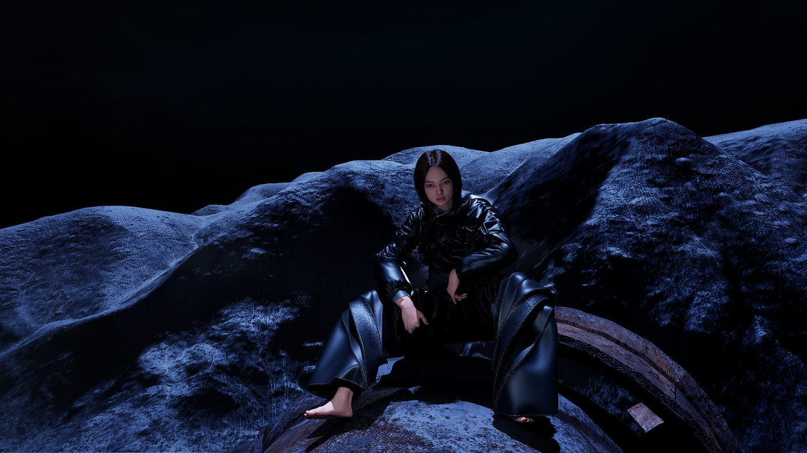
UNREAL RENDER
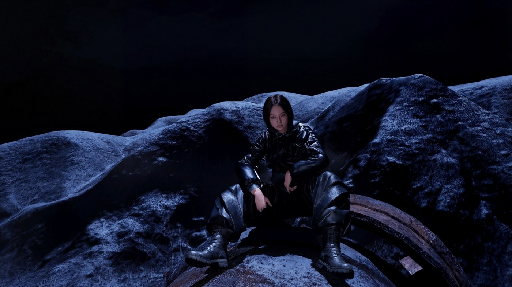
AI GENERATED
광원 방향 · 저채도 색감 · 그레인 · 콘트라스트를 통일해, 언리얼과 AI 컷이 하나의 시퀀스로 이어지도록 조정했습니다.
02
VP · CHROMA KEY · AI COMPOSITE
하몽 (夏夢)판타지 단편 · VP / 크로마키 / AI 합성 하이브리드
러프컷 완료 · 2026.08 쇼케이스 예정
OWNED 제작 문서 체계 · 캐릭터 디자인COLLABORATED 연출 · VP 운영 · 촬영 (Team 둡둡)
역할
프로덕션 코디네이터 · 제작 문서 체계 총괄 · 캐릭터 디자인
기간
2026.06 –
촬영
크로마키 1일 + VP(LED 월) 1일 · 외계인 캐릭터 100% AI 합성
러프컷 · 2026.08 쇼케이스 버전 작업 중
01 현장
VP(LED 월) 촬영 현장 — 배경은 실시간 렌더, 인물은 실사
02 시스템
촬영 이틀이 사고 없이 끝나도록, 모든 부서가 같은 문서를 봤습니다.
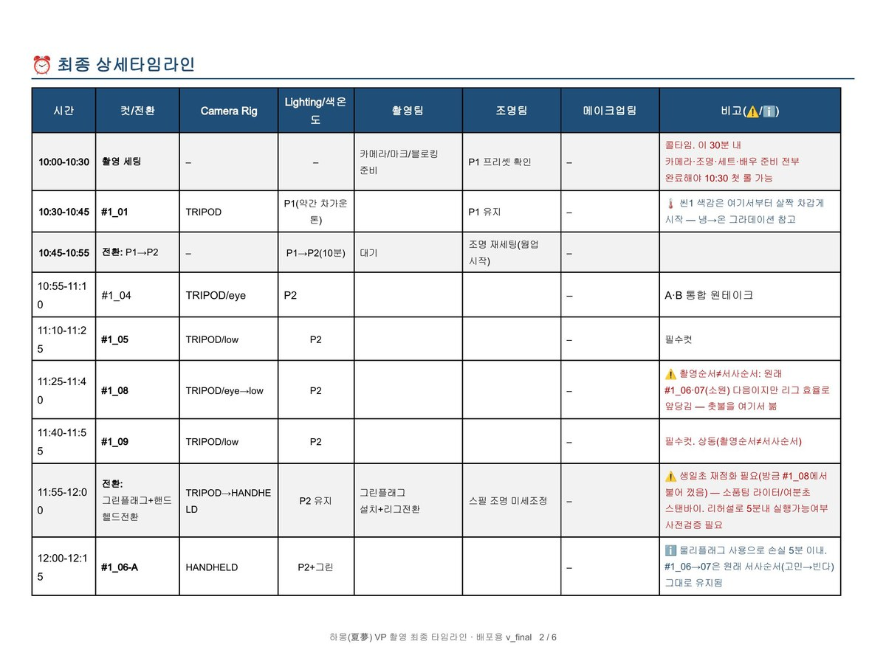
부서 통합 타임라인 — 촬영·조명·메이크업의 준비 시간을 한 문서에 통합해 부서 간 대기와 전달 누락을 줄였습니다.41컷 스토리보드 — 컷마다 VP·크로마키·AI 중 어떤 방식으로 찍을지 사전에 지정해, 현장에서 판단하지 않고 바로 실행하게 했습니다.
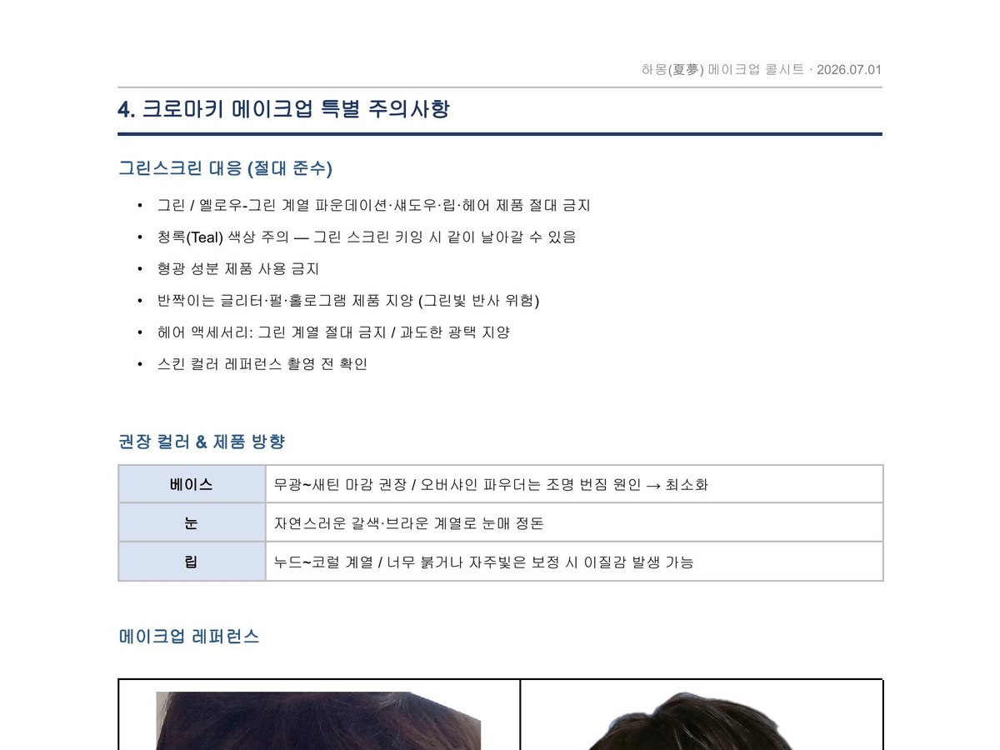
크로마키 컬러 규정 — 그린·옐로 계열 제품을 촬영 전 전수 금지해, 키잉 실패로 인한 재촬영 리스크를 없앴습니다.
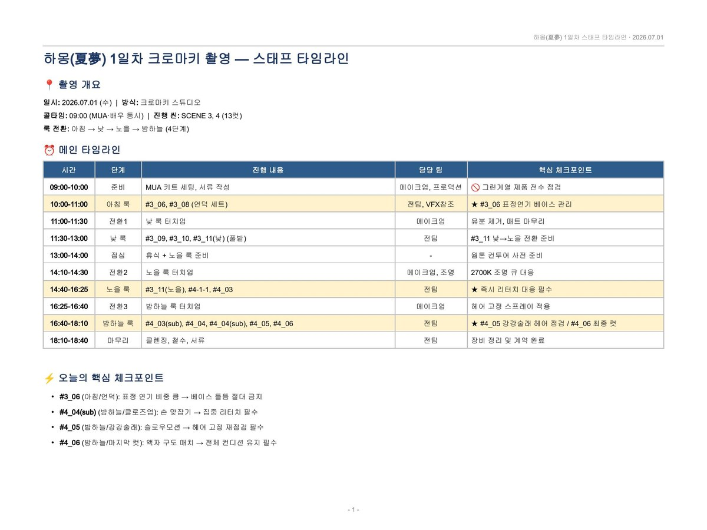
스태프 타임라인 · 1일차메이크업 콜시트 · 컷 리스트
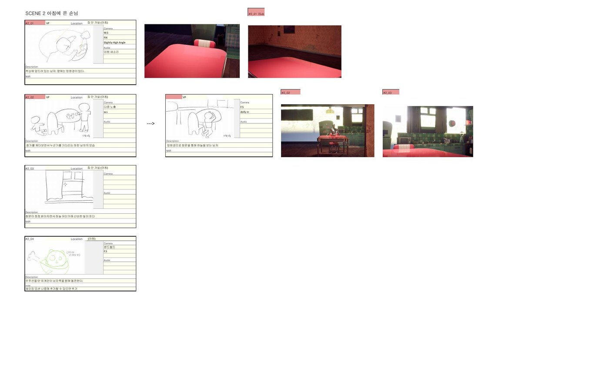
컷별 카메라 · 오디오 · VP/CH 지정소품 조달 마스터 트래커
03 캐릭터 디자인 — 창작부터 AI 합성까지
‘귀여운 외계인’이라는 최소한의 방향만 주어진 상태에서, 성격·실루엣·표정·색을 직접 설계해 하나의 고유 캐릭터로 완성했습니다.
01 초안
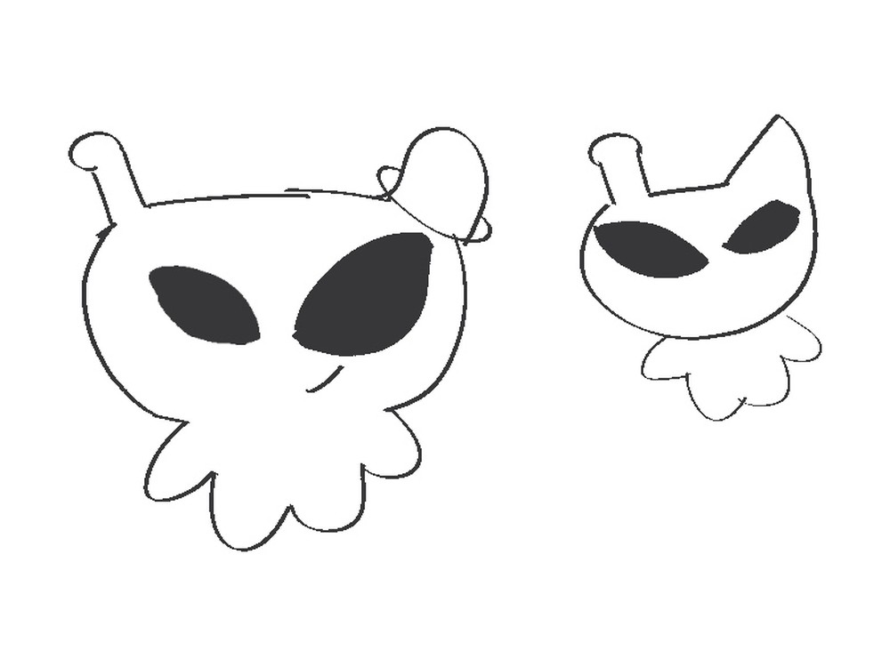
비대칭 눈 · 안테나 · 둥근 실루엣을 손그림으로 탐색
→
02 형태 개발
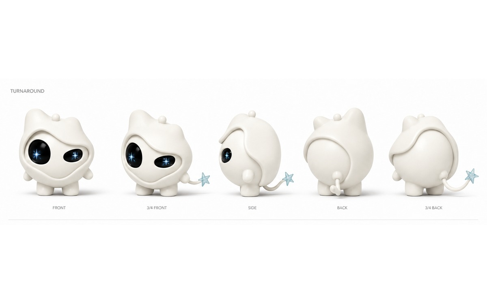
비대칭 후드 · 비대칭 눈 · 별 꼬리 — 최종까지 이어지는 형태 언어를 이 단계에서 고정
→
03 최종 캐릭터 가이드
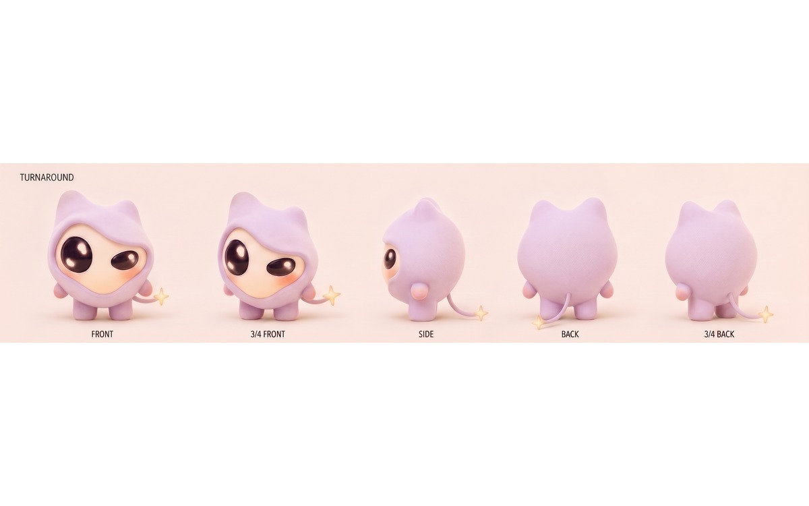
라벤더 벨벳 바디 · 유광 블랙 눈 · 웜골드 별 꼬리로 재질·색 확정 — 실제 3D 모델(위 히어로)도 이 버전을 그대로 사용
레퍼런스가 아니라, 제가 정의한 캐릭터입니다.
이 캐릭터를 AI 합성이 가능한 형태로 규격화하고, 캐릭터 디자인 → 클린 플레이트 → AI 합성의 흐름으로 영상에 구현했습니다.
현재 러프컷 편집 완료, 2026년 8월 완성 및 오프라인 쇼케이스 예정. 세계관을 영상에서 오프라인 경험으로 확장하는 과정을 진행 중입니다.
03
K-POP WORLDBUILDING · PROLOGUE FILM
Summer, AgainK-팝 세계관 프롤로그 필름
1분 프롤로그 · 풀 버전 개발 중
OWNED 기획 · 각본 · 연출 · AI 캐릭터 개발 (개인 프로젝트, 100%)
여름의 기억을 다시 감는 소녀와 계절을 건너온 종이 나비. 지나간 계절을 붙잡는 대신, 기억을 통과해 다시 앞으로 나아가는 순간을 설계했습니다.
역할
비주얼 디렉팅 총괄 · 각본 · AI 캐릭터 개발 (개인 프로젝트)
기간
2026.06 – 2026.07
규모
8씬 34컷 프로덕션 바이블 / 공개 분량: 1분 프롤로그
툴
Higgsfield Soul 2.0 외
1분 프롤로그 · 캐릭터와 공간의 일관성 워크플로우 검증본
KEY VISUAL 멈춰 있는 여름의 방 — 생활 소품, 자연광, 창밖의 녹음을 한 프레임에 묶어 현재의 시간을 정의했습니다.
01 NARRATIVE KEYFRAMES
공간을 먼저 보여주고, 종이 나비를 만드는 행동과 빛을 마주하는 감정으로 시선을 좁혀 갑니다.
MEMORY OBJECT지나간 계절을 현재로 이어 주는 종이 나비
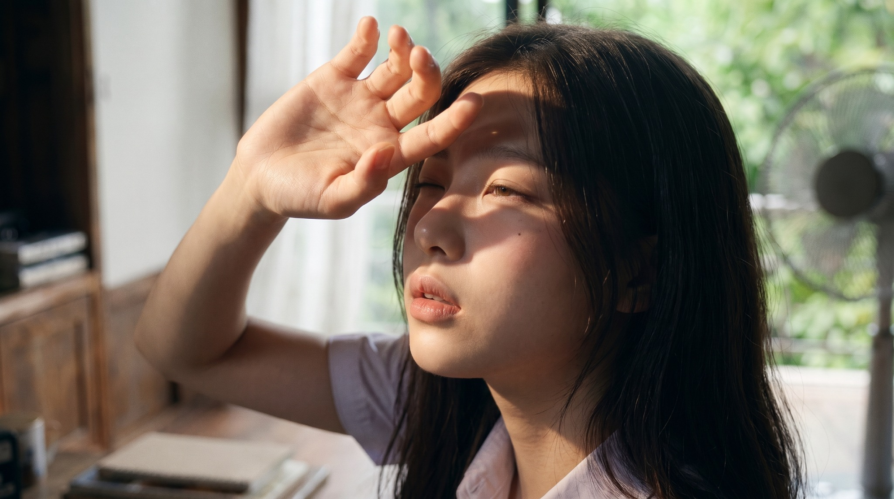
SUMMER LIGHT기억과 현재가 한 얼굴 위에서 겹쳐지는 순간
02 CHARACTER SYSTEM
장면마다 같은 인물로 읽히도록 얼굴 윤곽, 눈매, 머리 길이, 의상 실루엣을 기준점으로 고정했습니다.
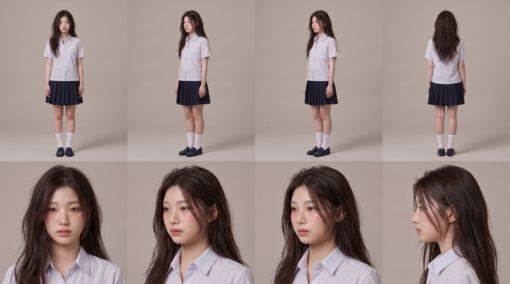
Character Turnaround전신 정면·3/4·측면·후면과 상반신 기준을 한 시트에 고정
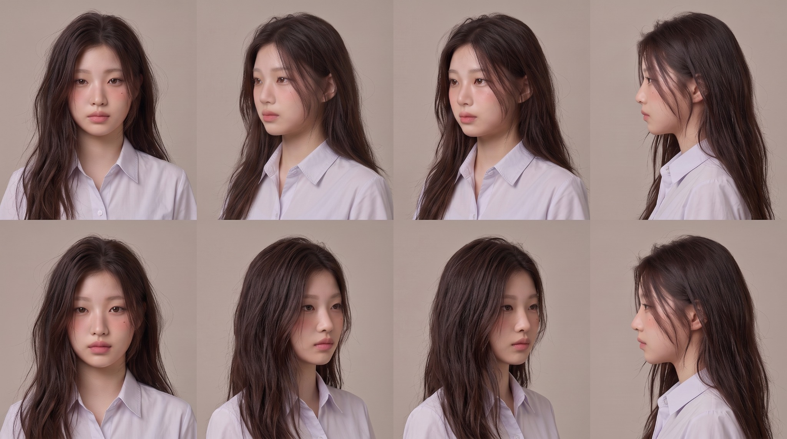
Face Consistency Sheet머리카락 흐름과 얼굴 각도가 달라져도 동일 인물로 유지되는지 검증
03 SPACE SYSTEM
현재의 방은 생활감과 열린 자연광으로, 기억의 복도는 반복되는 창과 깊은 명암으로 구분했습니다.
MAIN ROOM · CURRENT낮은 채도 · 생활 소품 · 부드러운 자연광
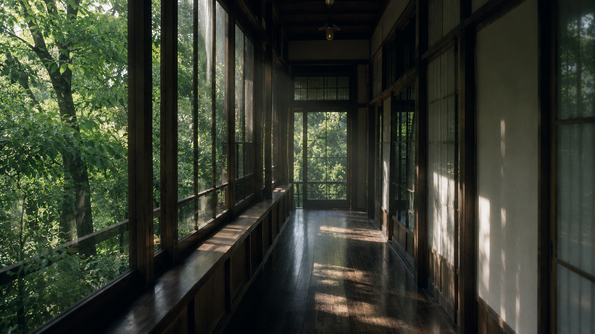
MEMORY CORRIDOR반복되는 창 · 깊은 명암 · 길게 이어지는 원근
04 STORY OBJECT & VISUAL RULES
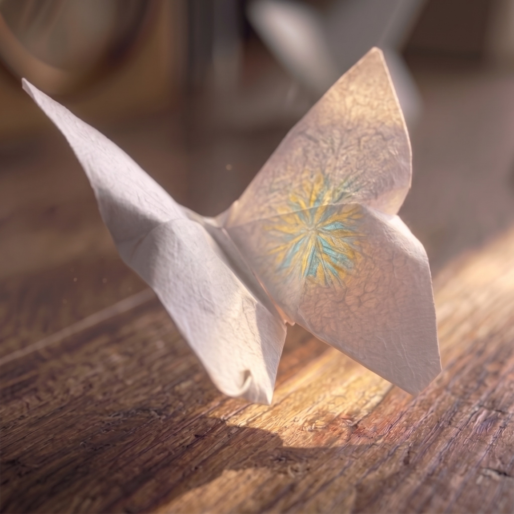
종이 나비 — 지나간 계절과 지금을 연결하는 매개체
색으로 시간을 나눕니다현재는 머스터드 옐로·틸 블루, 기억은 저채도와 16mm 그레인
화면비로 층위를 만듭니다기억 진입 시 16:9에서 1:1로 좁아져 감정의 밀도를 높입니다
캐릭터 기준을 먼저 고정합니다얼굴·머리·의상·공간 시트를 기준으로 34컷 전체를 같은 세계 안에 묶습니다
05 PRODUCTION BIBLE
생성 전에 러닝타임과 화면비 전환 지점을 확정해, 이미지 선택이 아니라 연출 규칙에 따라 컷을 제작했습니다.
8씬 34컷 러닝타임 설계 — 장면별 감정 변화와 컷 길이를 사전에 고정
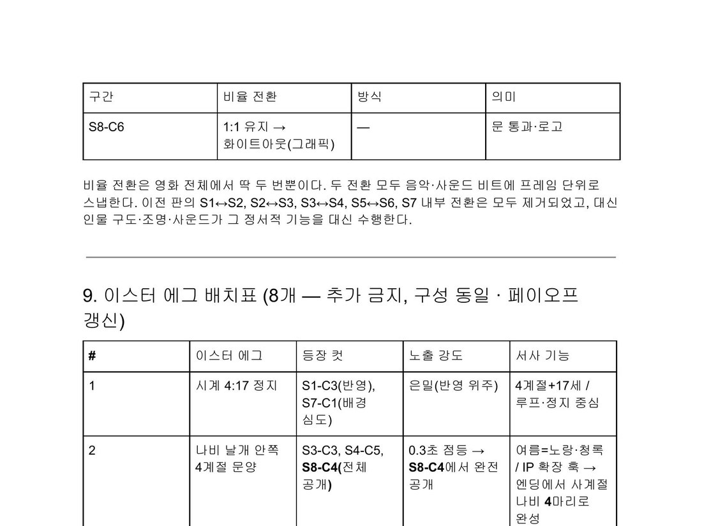
화면비율 전환 설계 — 기억 진입과 이탈 지점에서 전체 2회 전환
34컷 전체 설계를 완료하고, 그중 프롤로그 1분 분량을 먼저 제작해 캐릭터·공간 고정 워크플로우의 실현 가능성을 검증했습니다. 나머지 컷은 동일한 시트를 기준으로 이어서 제작 중입니다.
ABOUT
기술을 배우는 데서 멈추지 않고, 콘텐츠 언어로 번역합니다.
간호학에서 배운 것은 ‘대상에게 지금 필요한 것을 읽는 법’이었습니다. 지금은 그 감각으로 시청자가 원하는 장면을 설계합니다. 세 번의 프로젝트에서 디렉팅과 제작 실무를 맡으며, 계획이 무너지는 순간에도 결과물을 완성시키는 법을 훈련했습니다.
🎬비주얼 디렉팅
컬러 시스템 · 화면비 연출 · 세계관의 영상 번역
🤖AI 제작 파이프라인
캐릭터 일관성 워크플로우 · 위기 대응 대체 제작
📋프로덕션 운영
콜시트 · 마스터 스케줄 · 부서 간 정합성 관리
SKILLS
툴을 나열하지 않습니다. 무엇을 할 수 있는지 말합니다.
연출 · 기획
스토리보드
콘셉트 / 레퍼런스 보드
컬러 시스템 설계
화면비 · 컷 호흡 설계
AI 제작
AI 영상 생성 (Midjourney · Nano Banana · Kling · Higgsfield Soul 2.0 외)
캐릭터 일관성 워크플로우
AI 음악 협업
AI 기반 바이브 코딩 (웹 / 툴 구현)
촬영 · 현장
크로마키 촬영
VP (LED 월) 촬영
클린 플레이트 관리
프로덕션 운영
콜시트
마스터 스케줄
부서 통합 제작표
지원금 사용계획 문서
AI를 활용한 바이브 코딩으로 필요한 결과물을 직접 구현합니다 — 지금 보고 계신 이 포트폴리오 사이트도 그렇게 만들었습니다. 툴과 툴 사이를 잇는 파이프라인 설계로 문제를 풉니다.
PROPOSAL
HI HIGH에서 만들고 싶은 것 — 아티스트 세계관 프롤로그 필름 (실사 · AI · VP 하이브리드)
하이브는 아티스트 IP를 웹툰·소설·영상으로 확장하는 오리지널 스토리 사업을 전개하고 있습니다. 저는 이 확장의 첫 관문인 ‘세계관을 3분 영상으로 번역하는 일’을 팀 프로젝트로 제안하고 싶습니다. 실연 배우의 감정 + AI 생성의 확장성 + VP 배경의 통제력을 결합한 파이프라인으로, ‘Summer, Again’에서 혼자 설계했던 것을 이번에는 팀의 기준으로 만들어 보고 싶습니다.